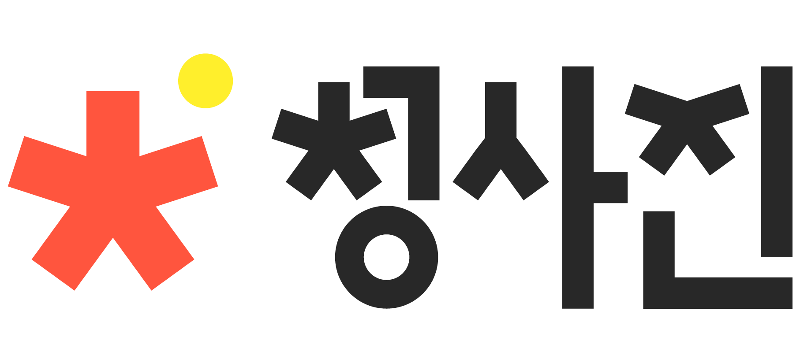

홀로서기를 시작한 청소년들이 직접 만들어 가는 나만의 학교
학교 밖 청소년의 미래를 준비하는 여정
프로젝트 배경
자발적 자퇴 비율이 늘어나는 지금.
2020년, 코로나 이후 급감했던 고교생들의 학업중단 비율은 15,163명으로 1.1% 수준이었지만
이후 2년 만인 2022년, 고교생들의 학업중단 비율은 23,440명으로 1.9%까지 급격하게 증가하고 있습니다.
또한 2019년부터 서울대･연세대･고려대 검정고시 출신 입학생의 비율은 0.7%에서 1.3% 순으로 꾸준한 상승세를 보이고 있으며
검정고신 출신 4년제 대학 학생 수는 2019년 4521명에 비해 2023년 7690명으로 무려 70.1%가 증가하여 우리나라 자퇴생의 비율이 점점 커지고 있습니다.
자료제공: 통계청 / 한국교육개발원 / 대학알리미

프로젝트 배경
주변의 인식과 소외집단이라는 낙인감.
학업을 중단한 청소년들은 자연스럽게 다른 또래와는 다른 소외집단이 되고, 이에 따라 낙인감을 경험하기 쉬워집니다.
이러한 낙인감은 주변과 사회 인식의 영향도 크게 받으며 이를 해결하기 위해서는 초기시점이 매우 중요합니다.
우리나라 학교 밖 청소년들에게는 다음과 같은 낙인감이 더 지배적임을 알았으며 사회가 자신을 부정적으로 바라볼 것이라고 생각한다는 뜻과도 같습니다.
우리는 이 문제를 해결하고자 "청사진" 서비스를 제안하려고 합니다.
자료제공: 한국청소년정책연구원의 논문 | 학교 밖 청소년의 낙인감과 자기통제의 종단적 관계가 성인 진입기 위험 행동에 미치는 영향